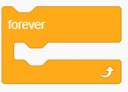
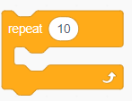
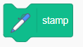
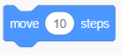

Cursor Rainbow path
An Interactive Scratch Project Guide
Project Description
This Scratch project is all about creativity and learning the basics of programming. You'll create a sprite that grows and shrinks, then follows your mouse around the screen, leaving a colorful trail behind.
Instructions
Follow these steps to create your interactive sprite:
First part:
- When starting, click on the flag :
- Then clear the stage with the 'erase all' block.
- Set your sprite's size to 10% using the 'set size to 10%' block.
(This will make your sprite smaller) - Use a 'forever' block , also called loop 
- Inside the loop:
-

Increase the size by 10: repeat 10 and change size by 10
 Then, decrease the size by 10: repeat 10 and change size by -10
Then, decrease the size by 10: repeat 10 and change size by -10


- To do this go down to the left corner and search this icon:
- Then choose the pen:

Change Size in a Loop: there is a trick, can you find it?
- When starting, click on the flag :
- Forever move towards the mouse pointer: forever and go to mouse-pointer
- While following the mouse, stamp a copy of the sprite at its current position. Use the block: stamp 
- After that, continue inside the loop and move 1 step then
change the color effect by 25 for 10 repetitions :

Second part:
Move Towards the Mouse Pointer